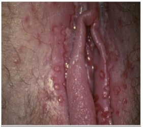
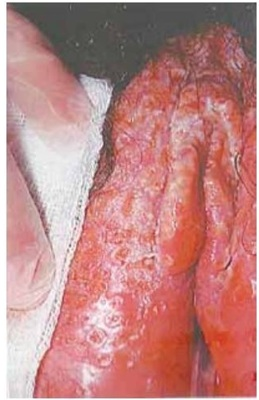

Questão 1 · Herpes na gestação · Indicações de cesárea · 4000190303Mulher de 36 anos de idade, primigesta, com idade gestacional de 38 semanas, é admitida na unidade de emergência com queixa de saída de secreção vaginal líquida há 3 horas e contrações irregulares. Ao exame clínico, apresenta dinâmica uterina de 2 contrações de 45 segundos em 10 minutos, líquido claro coletado em fundo de saco posterior visualizado em exame especular e toque vaginal com 5cm de dilatação cervical. À inspeção vulvar, são visualizadas lesões vesiculares e ulceradas, intensamente dolorosas, que segundo a paciente surgiram há 2 dias. Também relatou história de quadro semelhante anteriormente à gestação. A sorologia para HIV foi negativa e o VDRL foi de 1:8. A paciente nega ter realizado qualquer tratamento previamente. Qual é a conduta que deve ser adotada neste momento?
A Iniciar esquema de aciclovir e realizar assistência ao parto.
B Indicar a realização imediata de parto cesárea.
C Iniciar ocitocina para diminuir o tempo de trabalho de parto.
D Assistência ao trabalho de parto por via baixa.
Questão 2 · Herpes na gestação · 4000189208Há uma infecção congênita que ocorre, geralmente, por infecção genital materna. É mais comum sua transmissão durante o trabalho de parto ou pós-natal e chega a 50% no parto vaginal. Mulheres com primo-infecção geralmente são assintomáticas, enquanto aquelas com infecção recidivante têm a transmissão intraparto diminuída para uma taxa de 3% a 5% pela presença de anticorpos preexistentes. A alternativa correspondente à infecção é:
A Infecção congênita por herpes simples.
B Sífilis congênita precoce.
C Infecção congênita por citomegalovírus.
D Rubéola congênita.
Questão 3 · Diagnóstico na gestação · Rastreamento na gestação · 4000185782Quando a infecção por toxoplasmose é adquirida pela primeira vez durante a gravidez, os parasitas podem ser transmitidos da mãe para o feto, resultando em toxoplasmose congênita. Uma gestante de 14 semanas comparece à consulta trazendo resultados da primeira rotina laboratorial. Possui sorologia para toxoplasmose IgG não reagente e IgM não reagente. Qual a conduta mais correta a ser seguida?
A Considerar a paciente imune e tranquilizá-la com relação à doença.
B Solicitar teste de avidez para determinar quando houve a infecção e avaliar se há necessidade de tratamento.
C Iniciar o tratamento com Espiramicina imediatamente.
D Considerar a paciente não imunizada e repetir a sorologia no segundo e no terceiro trimestres, além de orientar sobre a alimentação e os riscos da infecção.
Questão 4 · Toxoplasmose congênita · Rastreamento na gestação · 4000184075Recém-nascido a termo, adequado para idade gestacional, lho de mãe hígida com pré-natal adequado, ultrassom morfológico normal. Sorologia de toxoplasmose com 7 semanas de gestação: IgM (método elisa) positivo, IgG positivo, com alta avidez. Exame clínico normal ao nascimento. A conduta recomendada é:
A realizar avaliação de fundo de olho, ultrassonografia transfontanela e abdominal, hemograma, punção lombar e sorologias do recém-nascido, antes de indicar o tratamento.
B coletar sorologia para toxoplasmose do sangue do cordão e indicar o tratamento dependendo do resultado.
C iniciar tratamento com sulfadiazina, pirimetamina e ácido folínico por um ano, independentemente do resultado de exames.
D realizar cuidados de rotina, não havendo necessidade de investigação diagnóstica ou de tratamento do recém- nascido.
Questão 5 · Toxoplasmose na gestação · Obstetrícia · 4000182965Durante consulta de pré-natal na atenção primária, gestante apresenta os seguintes resultados de sorologia para toxoplasmose: As condutas corretas são:

A espiramicina; encaminhar para a referência para realizar amniocentese.
B sulfadiazina, pirimetamina e ácido folínico; encaminhar para a referência para realizar amniocentese.
C espiramicina; não há necessidade de realizar a amniocentese.
D sulfadiazina, pirimetamina e ácido folínico; não há necessidade de realizar a amniocentese.
Questão 6 · Toxoplasmose na gestação · Obstetrícia · 4000182732RKC, 32 anos, primigesta, consulta com 16 semanas de gestação em uso de Espiramicina 3g/dia desde as 10 semanas, quando apresentou IgG e IgM positivos para toxoplasmose. Com 12 semanas, o exame de avidez de IgG foi de 10% (avidez baixa). Assinalar a alternativa que apresenta o manejo adequado dessa gestante:
A Suspender a Espiramicina, pois os exames indicam infecção anterior à gravidez.
B Manter a Espiramicina intercalando com Sulfadiazina, Pirimetamina e Ácido Folínico.
C Manter a Espiramicina e indicar a realização da amniocentese com exame de reação em cadeia da polimerase (PCR) a partir de 18 semanas.
D Trocar o tratamento para Sulfadiazina, Pirimetamina e Ácido Folínico.
Questão 7 · Toxoplasmose na gestação · Obstetrícia · 4000181881Uma gestante de 25 anos de idade, com 11 semanas de gestação, traz à consulta do pré-natal uma sorologia positiva para Toxoplasmose (IgM e IgG positivas). O próximo passo investigativo seria:
A Amniocentese para pesquisa de PCR de T.gondii
B Iniciar sulfadiazina + pirimetamina.
C Iniciar espiramicina com 18 semanas de gestação.
D Solicitar teste de avidez de IgG.
E Acompanhar com ultrassonografias seriadas.
Questão 8 · Citomegalovirus na gestação CMV · 4000193750Para quais gestantes é necessário fornecer orientações sobre prevenção de infecção congênita pelo citomegalovírus?
A Para todas, independente do estado sorológico.
B Somente para as que apresentem IgG negativa.
C Somente para aquelas com baixa avidez de IgM.
D Somente para as que apresentem tanto IgG quanto IgM negativas.
Questão 9 · Toxoplasmose na gestação · 4000171010Paciente é atendida em consulta de pré-natal na décima semana de gestação, sem comorbidades, apresentando sorologia para toxoplasmose com IgG e IgM positivos e teste de avidez para IgG com alta avidez. A conduta diante desses resultados é:
A prescrição de espiramicina
B manutenção de pré-natal habitual
C encaminhamento para amniocentese após 16 semanas
D início de sulfadiazina com pirimetamina, alternada com ácido folínico
Questão 10 · Toxoplasmose na gestação · 4000170619Com relação à infecção por toxoplasmose na gravidez, assinale a alternativa correta.
A Na maior parte das vezes, a infecção aguda apresenta-se como síndrome
B A presença de IgM positivo e IgG positivo com 26 semanas de gestação indica a realização de teste de avidez da IgG.
C O risco de transmissão vertical é diretamente proporcional à idade gestacional.
D Na presença de infecção aguda materna confirmada na gravidez, é necessário o tratamento com sulfadiazina, pirimetamina e ácido folínico.
E A infecção fetal pelo
Questão 11 · Herpes na gestação · 4000169793M.A.S., 18 anos, G2P1NA0, IG: 39 semanas e 6 dias, admitida em pronto atendimento com queixa de contrações frequentes. Nega comorbidades, mas refere aparecimento de lesões dolorosas na vulva há uma semana. Ao exame: dinâmica uterina 3 contrações de 40 segundos em 10 minutos, BCF: 138 bpm, colo 70% apagado, centralizado, 08 cm de dilatação, bolsa íntegra, cefálico, plano 0 De Lee. Inspeção da vulva com lesões bolhosas e dolorosas de acordo com imagem abaixo. Assinale a alternativa que apresenta a correta associação entre o agente etiológico e a via de parto que deve ser orientada.

A Herpes simples (HSV-1/HSV-2), encaminhar imediatamente para cesárea, para reduzir os riscos de transmissão vertical.
B Papilomavírus humano (HPV), realizar a assistência ao parto vaginal, pois não há riscos de transmissão vertical.
C Papilomavírus humano (HPV), encaminhar imediatamente para cesárea, para reduzir os riscos de transmissão vertical.
D Herpes simples (HSV-1/HSV-2), realizar a assistência ao parto vaginal, pois não há risco de transmissão vertical.
Questão 12 · Toxoplasmose na gestação · 4000168295Primigesta com 10 semanas de gestação trouxe à consulta resultados de exames sorológicos para toxoplasmose realizados há 1 semana, evidenciando IgG não reagente e IgM reagente. Com base nesses resultados, assinale a alternativa que contempla a conduta correta:
A Iniciar espiramicina imediatamente, solicitar teste de avidez para IgG e repetir as dosagens de IgG e IgM em 3-4 semanas para datação da fase aguda.
B Iniciar sulfadiazina, pirimetamina e ácido folínico imediatamente e repetir as dosagens de IgG e IgM em 3-4 semanas.
C Solicitar coleta imediata de material para dosagens de IgG, IgM, IgA e IgE e teste de avidez para IgG e programar cordocentese em 2-3 semanas para pesquisa de IgM específica.
D Solicitar teste de avidez para IgG e oferecer a possibilidade de realização imediata de punção de líquido amniótico para PCR para investigação da infecção fetal.
Questão 14 · Toxoplasmose na gestação · Rastreamento na gestação · 4000167152G1P0A1, idade gestacional de 9 semanas, volta à consulta de pré-natal trazendo os seguintes exames para toxoplasmose: I gG reagente e IgM reagente. Foi solicitado o teste de avidez IgG específico, que apresentou como resultado alta avidez. Nesse caso, devemos considerar
A infecção aguda.
B infeção materna e fetal.
C paciente suscetível.
D infecção adquirida há menos de 4 meses.
E infecção adquirida há mais de 4 meses.
Questão 15 · Prevenção diagnóstico e tratamento · 4000166980A rubéola é uma infecção viral que, nas últimas décadas, teve a incidência e a prevalência diminuídas drasticamente no Brasil. Considerando o rastreio da rubéola no pré-natal, é INCORRETO afirmar:
A O rastreio para a rubéola no pré-natal, atualmente, deve, em todos os casos, ser realizado com os exames de primeiro trimestre, que incluam hemograma completo; tipagem sanguínea; glicemia de jejum; urina I; urocultura; sorologias para toxoplasmose, sífilis, hepatite B, hepatite C e HIV; TSH; protoparasitológico de fezes; ultrassom de primeiro trimestre.
B Devido à eliminação da rubéola e da síndrome da rubéola congênita no Brasil, o Ministério da Saúde recomenda que não seja realizado o exame sorológico com pesquisa de IgM para rubéola na rotina de pré-natal para gestantes, em casos de mulheres assintomáticas.
C A grande quantidade de exames sorológicos com pesquisa de IgM para rubéola resulta em um número alto de falsos positivos, acumulando casos suspeitos de rubéola que não correspondem à definição de caso da doença.
D Caso exista a necessidade de saber se a gestante tem títulos protetores para o vírus da rubéola, é recomendado solicitar apenas o IgG. Mesmo que a mulher seja negativa, não poderá utilizar a vacina dupla (sarampo-rubéola) ou a tríplice viral (sarampo-rubéola-caxumba) durante a gestação.
Questão 16 · Toxoplasmose na gestação · 4000166442Leia o caso clínico a seguir. Uma gestante apresentou no teste da mamãe, realizado com dez semanas de gestação, IgM e IgG para toxoplasmose positivos. Após este resultado, ainda com doze semanas de gestação, foi realizada a avidez para IgG que resultou em 80%. No segundo trimestre de gestação, a gestante realizou a amniocentese para a realização de reação de cadeia de polimerase (PCR) para detecção do Toxoplasma gondii, que resultou negativo. Ao nascimento, com 38 semanas de idade gestacional, o recém-nascido apresentava IgM negativo, IgG em níveis semelhantes ao materno e a mãe apresentava, nesta ocasião, IgM e IgG positivos. Nesse caso, a melhor conduta é:
A tratar o recém-nascido porque a gestante teve toxoplasmose comprovada durante gestação.
B tratar o recém-nascido porque a gestante teve toxoplasmose provável durante gestação.
C não tratar o recém-nascido porque é improvável que a gestante tenha tido toxoplasmose durante gestação.
D não tratar o recém-nascido porque a gestante não teve toxoplasmose durante gestação.
Questão 17 · Toxoplasmose na gestação · 4000166178Uma gestante com início tardio de pré-natal e 26 semanas, no retorno em consulta, entre os exames solicitados, tinha sorologia de toxoplasmose com IgM positivo e IgG positivo. Considerando o resultado da sorologia e a idade gestacional, nesse caso hipotético, assinale a alternativa correta.
A É necessária a realização de teste de avidez da IgG para, assim, determinar se a infecção por toxoplasmose é aguda.
B Deve-se iniciar espiramicina e realizar amniocentese com pesquisa de PCR para
C Deve-se iniciar espiramicina, não havendo necessidade de amniocentese ou pesquisa de PCR para
D Não se deve iniciar espiramicina, mas é necessário realizar amniocentese com pesquisa de PCR para
E Deve-se iniciar tratamento com pirimetamina, sulfadiazina e ácido folínico.
Questão 18 · Inf ecções congênitas · 4000164755Durante o pré-natal é rotineira a solicitação de exames de sí lis. Assim, pode-se considerar sobre rastreamento indicado pelo protocolo Mãe Curitibana, Versão 2021:
A O exame inicial recomendado é o VDRL, teste não treponêmico, mais sensível que os treponêmicos na sífilis latente.
B Se na primeira etapa o teste for negativo, considera-se gestante sem sífilis, mas a evidência epidemiológica pode exigir repetir o teste.
C A segunda etapa é feita com teste treponêmico se o primeiro teste, não treponêmico, for negativo.
D O teste rápido não pode também ser utilizado na Terceira etapa.
Questão 19 · Diagnóstico de toxoplasmose congênita · 4000164687Primigesta, assintomática, sem patologias prévias, iniciou acompanhamento de pré-natal com 8 semanas de idade gestacional (IG). Foram realizados, entre outros exames, os testes para triagem de toxoplasmose. Inicialmente, o resultado foi anticorpos IgM positivos e anticorpos IgG negativos. Com esse resultado, o médico optou por repetir os mesmos exames 15 dias depois. A gestante só retornou para consulta com 16 semanas de IG e a nova sorologia para toxoplasmose apresentou anticorpos IgM e IgG positivos. Com base nos protocolos da Federação Brasileira das Associações de Ginecologia e Obstetrícia, assinale a alternativa que apresenta a conduta a ser tomada.
A Realização de avidez de anticorpos IgG em nova amostra, para afastar a possibilidade de anticorpos IgM residuais de infecção antiga.
B Indicar imediatamente amniocentese para o diagnóstico de possível infecção fetal.
C Iniciar tratamento com espiramicina, na dose de 3 g por dia, e programar amniocentese para ser realizada após 18 semanas.
D Iniciar o tratamento com espiramicina, alternando-se de três em três semanas com sulfadiazina, pirimetamina e ácido folínico, bem como a realização de USG morfológico.
E Em razão dos exames sorológicos para toxoplasmose terem sido discordantes, antes de iniciar a medicação, repetir os testes sorológicos para detecção dos anticorpos IgM e IgG
Questão 20 · Toxoplasmose na gestação · 4000164520Analise as assertivas abaixo em relação a infecções na gestação: I. O risco de transmissão na soroconversão para a toxoplasmose aumenta com o evoluir da gestação. II. Em geral, o VDRL ( cancro duro. III. A transmissão vertical para o HIV (AIDS) está estimada em 25%, caso nenhuma medida preventiva seja tomada. Quais estão corretas?
A Apenas I.
B Apenas II.
C Apenas III.
D I, II e III.
Questão 21 · Toxoplasmose na gestação · Toxoplasmose congênita · 4000164410Recém-nascido, sexo masculino, nascido de parto vaginal a termo, apresentou Apgar 7 (1’) e 9 (5’), peso de 3.520 g e exame físico normal. Os dados no cartão de pré-natal evidenciam presença de anticorpos IgM e IgG com 80% de avidez contra o iniciais, a melhor para este recém-nascido é
A não realizar maiores investigações.
B realizar exames para o diagnóstico de toxoplasmose congênita.
C iniciar tratamento para toxoplasmose congênita.
D solicitar a avaliação do infectologista.
Questão 22 · Toxoplasmose na gestação · 4000164268Primigesta, 23 anos, branca, amasiada, do lar, idade gestacional: 11 semanas. Vem à consulta de retorno pré-natal, na Unidade Básica de Saúde, para checar resultados de exames descritos a seguir: Hemoglobina: 12,6 g/dl; hematócrito: 40%. Sorologia para toxoplasmose (quimioluminescência): IgG reagente e IgM reagente. Qual o melhor manejo para essa gestante no pré-natal de origem?
A Repetir sorologia para toxoplasmose.
B Encaminhar para realização de amniocentese.
C Realizar orientações profiláticas e repetir sorologia.
D Iniciar espiramicina e solicitar teste avidez.
Questão 23 · Toxoplasmose na gestação · Obstetrícia · 4000142786Primigesta com idade gestacional de 29 semanas comparece à sua 4° consulta de pré-natal. Fez todos os exames recomendados na sua rotina de primeiro trimestre; mostrou sorologia para toxoplasmose IgG- negativo e IgM- negativo. Hoje, apresenta exames realizados na semana anterior, cuja sorologia de toxoplasmose apresenta-se IgG- negativo e IgM positivo. Marque a alternativa que melhor se aplica à condução desta gestante:
A Iniciar espiramicina imediatamente e repetir sorologia em 3 semanas.
B Iniciar espiramicina, pirimetamina, sulfadiazina e ácido folínico. Repetir sorologia em 3 semanas.
C Iniciar espiramicina e solicitar teste de avidez de IgG.
D Solicitar teste de avidez de IgG, iniciar espiramicina apenas se resultado compatível com baixa avidez.
E Solicitar teste de avidez de IgG e iniciar espiramicina. Iniciar pirimetamina, sulfadiazina e ácido folínico apenas se houver evidência de infecção fetal (Reação em cadeia da polimerase/PCR ou alteração ultrassonográfica).
Questão 24 · Diagnóstico de toxoplasmose congênita · Pediatria · Toxoplasmose congênita · 4000142542A toxoplasmose congênita é uma infecção de difícil diagnóstico e constitui um grande problema de saúde pública pela elevada morbimortalidade a ela associada. Sobre essa doença, assinale a alternativa correta.
A A maioria dos recém-nascidos (70%) com infecção congênita por toxoplasmose são sintomáticos.
B O risco de transmissão materno-fetal diminui com o avançar da gestação.
C O grau de comprometimento do concepto é menor quando a infecção ocorre no início da gestação.
D A sorologia negativa de anticorpos da classe IgM no recém-nascido exclui o diagnóstico de infecção congênita.
E A dosagem simultânea e seriada de anticorpos da classe IgG da mãe e do recém-nascido é utilizada no diagnóstico laboratorial.
Questão 25 · Doenças associadas à gestação · Doenças inf ecciosas na gestação HIV síf ilis hepatites herpes · 4000142060Diagnóstico na gestação Mariana, 22 anos, compareceu à consulta médica de pré-natal com resultados dos exames solicitados pela enfermeira há um mês. O resultado da sorologia para toxoplasmose foi IgM e IgG positivos. Todos os outros exames estavam normais. Foi realizado teste de avidez de IgG na mesma amostra, evidenciando forte avidez de IgG. Mariana está com 13 semanas de gestação. Sua conduta enquanto responsável pelo pré-natal de Mariana é:
A Prescrever espiramicina.
B Orientar Mariana que se trata de infecção adquirida antes da gravidez.
C Prescrever pirimetamina, sulfadiazina e ácido folínico.
D Encaminhar imediatamente para o infectologista.
Questão 26 · Diagnóstico na gestação · Tratamento da toxoplasmose na gestação · Obstetrícia · 4000140852Gestante de 23 anos de idade está em sua primeira gestação. Iniciou o pré-natal com 19 semanas de gestação. Está em acompanhamento irregular na UBS pois trabalha como atendente em um pet Shop e está sem tempo para as consultas. Vem encaminhada ao pré-natal de alto risco com 25 semanas de gestação com os exames descritos a seguir. Qual é a conduta pré-natal imediata?

A Iniciar ácido fólico em dose dobrada.
B Iniciar pirimetamina associada a sulfadiazina.
C Iniciar espiramicina isolada.
D Iniciar espiramicina associada a pirimetamina.
Questão 27 · Tratamento da toxoplasmose na gestação · Obstetrícia · Tratamento · 4000129194Que tratamento, dentre os abaixo, é o mais adequado para toxoplasmose congênita confirmada durante a gestação?
A Espiramicina
B Espiramicina e ácido fólico
C Pirimetamina, sulfadiazina e ácido fólico
D Pirimetamina, sulfadiazina e azitromicina
Questão 28 · Toxoplasmose na gestação · 4000128432Gestante, 22 anos, G2P1, com 10 semanas de gestação, chega para consulta de retorno d epré-natal com os seguintes resultados sorológicos para toxoplasmose: ELISA-IgM = positivo e ELISA-IgG = positivo. Qual seria sua conduta?
A Solicitar o teste de avidez de IgG para toxoplasmose e iniciar tratamento materno imediato com clindamicina e sulfa.
B Solicitar o teste de avidez de IgG para toxoplasmose e iniciar espiramicina.
C Solicitar o teste de avidez de IgG para toxoplasmose e iniciar o tratamento da infecção fetal com sulfa e pirimetamina.
D Fazer cordocentese ou amniocentese para pesquisa de DNA do Toxoplasma gondii.
E Iniciar sulfadiazina, pirimetamina e ácido folínico de imediato, visto que a paciente está no primeiro trimestre.
Questão 29 · Herpes na gestação · 4000120022Primípara de 28 anos, 39 semanas de gestação, em trabalho de parto, apresenta ruptura da bolsa há 3 horas e refere história de lesões dolorosas na vulva há 4 dias. Exame físico: extensa placa eritematoedematosa, com exulcerações nos pequenos lábios (imagem a seguir). Exame citológico direto: células multinucleadas e núcleos com aspecto de vidro fosco. A conduta imediata é

A cesariana e sorologia para herpes vírus.
B parto vaginal e penicilina cristalina.
C cesariana e aciclovir.
D parto vaginal e ganciclovir.
Questão 30 · Diagnóstico de toxoplasmose congênita · Toxoplasmose · 4000119139Gestante de 6 semanas traz resultado de sorologia para toxoplasmose com IgM positiva e IgG positiva, com teste de avidez de IgG de 80%. É correto afirmar que?
A Trata-se de infecção recente, passível de tratamento clínico.
B Provavelmente a infecção ocorreu antes da gestação.
C O teste é inconclusivo, devendo-se repeti-lo em 6 semanas.
D O teste indica infecção tratada anteriormente.
Questão 31 · Manif estações clínicas e congênitas · 4000115146Quanto às infecções virais na gestação e as repercussões fetais e neonatais relacionadas, pode-se afirmar que
A O American College of Obstetricians and Gynaecologists (ACOG, 2007) recomenda quea escolha da via de parto seja obstétrica em gestantes com lesões ativas de herpes genital, pois a cesárea não reduz significativamente o risco de infecção do recém-nascido pelo herpes-vírus simples (HSV).
B gestantes com lesões herpéticas devem ser tratadas apenas com antivirais tópicos uma vez que drogas como Aciclovir, Fanciclovir ou Valaciclovir, se ingeridas via oral, atravessam a barreira placentária e podem causar efeitos teratogênicos no feto.
C a infecção pelo parvovírus B19 durante a gravidez pode estar associada a anemia e hidropsia fetais.
D a soropositividade materna IgG anti-citomegalovírus (IgG anti-CMV) previne infecçõe srecorrentes durante a gravidez e protege contra a transmissão vertical.
E segundo o Ministério da Saúde (2013), a terapia antirretroviral (TARV) nas gestantesinfectadas pelo vírus da imunodeficiência humana (HIV) deve ser indicada conforme critérios clínicos e imunológicos, principalmente os níveis de linfócitos T CD4+.
Questão 32 · Transmissão da toxoplasmose · 4000114011A toxoplasmose na gestação é transmitida ao feto pela via transplacentária na forma de:
A oocisto.
B cisto.
C esporozoíto.
D taquizoíto.
Questão 33 · Prevenção na gestação · 4000107266Frente a gestante com sorologia negativa para toxoplasmose, é recomendado orientá-la a evitar:
A consumo ou manipulação de carne crua.
B contato com pássaros.
C aglomerações de pessoas.
D locais com baixa circulação de ar.
Questão 34 · Diagnóstico · 4000103787Paciente primigesta, com Idade Gestacional de 12 semanas, comparece à consulta pré-natal com resultado de exames de rotina evidenciando sorologia para toxoplasmose IGG positivo e IGM positivo. Qual a melhor conduta?
A Indicar imediatamente amniocentese, para pesquisa de PCR no líquido amniótico.
B Solicitar teste de avidez para IGG e, se baixa avidez, iniciar profilaxia com Espiramicina.
C Solicitar teste de avidez para IGG e, se alta avidez, iniciar tratamento com Espiramicina.
D Iniciar tratamento para toxoplasmose aguda com esquema tríplice: Pirimetamina + Sulfadiazina, intercalados com Espiramicina.
Questão 35 · Etiologia e transmissão · 4000100988A infecção pelo Zika vírus constitui-se uma preocupação no acompanhamento pré-natal no Brasil devido à sequela da microcefalia no recém-nascido causada pela infecção, o que se constitui um grave problema de Saúde Pública. Diante do exposto é importante que o médico tenha conhecimento sobre a infecção pelo vírus na gestação, então, das questões abaixo, qual a afirmação VERDADEIRA?
A Embora o Zika vírus seja encontrado no leite materno no caso de infecção aguda a amamentação não é contraindicada.
B O uso de repelentes ambientais do tipo spray é eficaz contra o mosquito vetor da Zika.
C O repelente a base de Icaridina e a ingestão de tiamina pela gestante são eficazes na proteção contra o mosquito vetor da Zika e aprovados pela ANVISA.
D Para um correto diagnóstico ultrassonográfico da microcefalia fetal é necessário apenas saber a data da última menstruação da gestante.
Questão 36 · Diagnóstico de toxoplasmose congênita · Diagnóstico na gestação · 4000083765Paciente, G2PN1A0, IG:26 semanas, realizou a 1ª sorologia para Toxoplasmose tardiamente, com resultado IgG e IgM POSITIVOS, tendo sido prescrita Espiramicina. Foi encaminhada para realização de amniocentese, com resultado NEGATIVO para pesquisa de infecção fetal. Qual a conduta adequada?
A Suspender o uso da Espiramicina
B Realizar teste de avidez de IgG
C Iniciar Pirimetamina, Sulfadiazina e Ácido Folínico
D Manter o uso da Espiramicina até o parto
Questão 37 · Parvovirus B19 na gestação · 4000078493A hidropsia fetal é definida pelo acúmulo anormal de líquido em pelo menos dois ou mais compartimentos corporais fetais. São causas de hidropsia fetal não imune, EXCETO:
A cromossomopatia.
B infecção por parvovírus.
C doença hemolítica perinatal.
D cardiopatia com hipoplasia das cavidades esquerdas.
E síndrome da transfusão feto-fetal.
Questão 38 · Toxoplasmose na gestação · 4000078473A infecção aguda por nascido. O acompanhamento pré-natal adequado, incluindo pesquisa sorológica e orientações às gestantes suscetíveis, permite a prevenção e tratamento adequado da infecção. A maioria das gestantes com infecção aguda adquirida não apresenta sinais ou sintomas da doença. A realização de sorologia com anticorpos IgG e IgM para indicada durante o pré-natal. A necessidade de realização do teste de avidez de IgG durante o primeiro trimestre ocorre quando há o seguinte achado sorológico:
A IgM reativo/ IgG reativo.
B IgM reativo/ IgG não reativo.
C IgM não reativo/ IgG reativo.
D IgM não reativo/ IgG não reativo.
E deve ser sempre solicitado, independente da sorologia.
Questão 39 · Zika vírus na gestação · 4000074447Em uma área endêmica para o vírus Zika é recomendado à gestante:
A O uso de preservativos pelo companheiro até o final da gravidez.
B Evitar uso de repelentes contendo icaridina no primeiro trimestre da gravidez.
C Realizar ultrassonografia obstétrica e sorologia para Zika vírus todos os meses.
D Realizar exames laboratoriais para Zika vírus a cada dois meses.
Questão 40 · Herpes e gravidez · Herpes na gestação · Obstetrícia · 4000073236Gestante com 37 semanas e 5 dias apresenta metrossistoles 4/10’/50’’, colo 90% apagado, dilatado 2cm, com a bolsa íntegra. O exame da vulva revela múltiplas lesões vesiculosas, algumas ulceradas, que segundo a paciente surgiram há poucos dias e que nunca apresentou quadro clínico semelhante anteriormente. Qual a conduta mais adequada para o caso?
A Aciclovir por via oral durante 7 dias.
B Tocólise e aciclovir por 7 dias.
C Aguardar evolução do trabalho de parto e tratar a infecção no puerpério com aciclovir por via oral durante 7 dias.
D Indicar cesariana.
E Iniciar tratamento com aciclovir venoso e aguardar evolução do parto.
Questão 41 · Diagnóstico na gestação · Toxoplasmose · 4000073224Gestante na 10.a semana apresenta IgG e IgM positivas para toxoplasmose. A pesquisa de avidez da IgG revela taxas de alta avidez. Qual a conduta mais adequada para o caso?
A Recomendar a interrupção da gravidez.
B Amniocentese com 16 semanas para fazer PCR do líquido amniótico.
C Orientar o casal que a infecção é passada.
D Sulfadizina e pirimetamina.
E Espiramicina.
Questão 42 · Diagnóstico · Toxoplasmose · Rastreamento na gestação · 4000062509Paciente 18 anos, 10 semanas de gestação em acompanhamento pré-natal. Á sorologia apresentou IgG e IgM positivo para toxoplasmose. A conduta mais adequada é:
A Conservadora. Paciente IgG positivo é imune à doença e por isso não há risco de infecção fetal.
B Realizar teste de avidez de IgG, se alta iniciar o tratamento
C Repetir sorologia trimestralmente e verificar se houve alguma alteração
D Realizar teste de avidez de IgG, se baixa iniciar o tratamento
Questão 43 · Tratamento · 4000058973A toxoplasmose durante a gestação deve ser tratada tão precoce quanto possível. Se no município em que a gestante acompanha o pré-natal não for possível realizar PCR de líquido amniótico, o tratamento deve ocorrer seguinte maneira, exceto:
A Até 16 semanas usar apenas espiramicina.
B Entre 17 e 33 semanas deve ser utilizado Sulfadiazina, pirimetamina e ácido folínico.
C A partir de 34 semanas usar apenas espiramicina.
D Suspender todas as medicações com 36 semanas.
E Se o diagnóstico for com 30 semanas devemos iniciar com sulfadiazina, pirimetamina e ácido folínico.
Questão 44 · Toxoplasmose na gestação · Zika vírus na gestação · Rubéola na gestação · 4000054893A epidemia do Zika vírus em 2016 nas Américas, no Caribe e no Pací co, foi ainda mais alarmante em razão das descrições de microcefalia e malformações no sistema nervoso central nos fetos das gestantes acometidas passando a integrar o grupo das doenças relacionadas com infecção congênita nos recordando na importância do estudo desse tema. Portanto avalie a seqüência de afirmações a seguir classificando-as em verdadeiras (V) ou falsas (F). (A) - A infecção pelo ZIKA VÍRUS pode ser assintomática ou apresentar sintomas gerais como febre baixa, eritema pruriginoso, artralgia, mialgia e mal estar, ou ainda cursar com complicações neurológicas em adultos como síndrome de Guillain-Barré, encefalite, mielite transversa e meningo encefalite. ( ); (B) - A sorologia para CITOMEGALOVÍRUS (IgG positivo e IgM negativo) confere imunidade permanente para a infecção, excluindo a possibilidade dessa infecção congênita durante a gestação. ( ); (C) - A RUBEOLA é uma infecção congênita passível de prevenção por meio da vacinação durante a gestação dos casos susceptíveis (IgG negativo e IgM negativo), evitando as seqüelas da tríade clássica: cardiopatia, catarata e surdez. ( ); (D) - A TOXOPLASMOSE deve ser rastreada durante a gestação. Caso a sorologia do primeiro trimestre da gestação apresente IgG positivo e IgM positivo deve ser realizado o teste da avidez para IgG da toxoplasmose e se apresentar alta avidez indica que a infecção foi prévia a gestação. ( ); (E) - A PARVOVIROSE é causada pelo parvovírus B19 que apresenta ação citotóxica na eritropoiese o que pode resultar em anemia e ou hidropsia fetal. ( ).
A (A é (V; (B é (V; (C é (F; (D é (V; (E é (F
B (A é (F; (B é (F; (C é (V; (D é (V; (E é (V
C (A é (V; (B é (F; (C é (F; (D é (V; (E é (V
D (A é (V; (B é (F; (C é (V; (D é (F; (E é (V
E (A é (V; (B é (V; (C é (F; (D é (V; (E é (F
Revisar: possível letra faltando em enunciado
Questão 45 · Herpes e gravidez · Herpes na gestação · 4000037754A infecção pelos vírus da herpes simples tipos 1 e 2 é extremamente comum em mulheres na idade fértil. Estima-se que sua prevalência aproxime-se de 70% em gestantes. Sobre a infecção fetal por essa patologia, assinale a alternativa correta.
A Geralmente, é fatal na infecção materna ativa em qualquer idade gestacional.
B Quanto maiores os sintomas maternos, maior o risco de transmissão para o feto.
C A infecção primária materna correlaciona-se com maiores riscos de infecção fetal.
D A indicação da via de parto será cesariana em caso de lesões ativas, independentemente do local das lesões.
E Em casos de reativação da infecção materna, maior será o risco de transmissão vertical comparada à primoinfecção.
Questão 46 · Diagnóstico na gestação · Tratamento da toxoplasmose na gestação · Transmissão da toxoplasmose · 4000036151Em relação à toxoplasmose na gestação, assinale a alternativa incorreta.
A A transmissão fetal aumenta de 15% para 60% entre o primeiro e o terceiro trimestre de gestação.
B Os anticorpos IgM são detectados a partir do sétimo dia, e os anticorpos IgG, a partir do 14º dia após a contaminação materna.
C O teste de avidez de IgG deve ser realizado nas situações de IgM positivo e IgG negativo, até o quarto mês de gestação, para avaliar se a contaminação materna foi antes ou após a concepção.
D Confirmada a infecção fetal, através da reação em cadeia da polimerase (PCR), deve-se iniciar sulfadiazina, pirimetamina e ácido folínico.
Questão 47 · Diagnóstico na gestação · Rastreamento na gestação · 4000031478Paciente de 28 anos, G2P1A0, IG: 12 semanas e 3 dias em acompanhamento pré-natal na UBS, comparece com resultado de exames do primeiro trimestre. Entre eles, a sorologia de toxoplasmose se apresenta da seguinte maneira: IgG: reativo lgM: reativo. Assinale a alternativa correta
A Solicitar o teste de avidez de IgG.
B Solicitar o teste de avidez de IgG. Se o resultado for de baixa avidez ou avidez intermediária, implica infecção antes da gestação.
C Solicitar o teste de avidez de IgG e iniciar o tratamento com espiramicina. Se o resultado for de alta avidez, implica em infecção recente.
D Iniciar espiramicina apenas após o resultado do teste de avidez de IgG.
E Iniciar imediatamente espiramicina, pirimetamina, sulfadiazina e ácido folínico.
Questão 48 · Diagnóstico na gestação · Tratamento da toxoplasmose na gestação · Rastreamento na gestação · 4000028793O Toxoplasma Gondii é um protozoário intracelular obrigatório, distribuído em quase todas as regiões do mundo. Sobre essa afecção afirma-se:
A paciente na primeira consulta IgM negativo e IgG positivo deve receber tratamento com espiramicina.
B paciente com IG de 20 semanas com IgM e IgG positivos deve realizar o teste de avidez.
C teste com avidez alta (> 60% representa infecção há mais de 3 ou 4 meses.
D o diagnóstico da infecção fetal por meio da amniocentese e pesquisa de PCR no líquido amniótico não é mais utilizado.
Questão 49 · Diagnóstico e tratamento · Sinais e sintomas · 4000024010Uma criança de três meses de idade, avaliada em consulta de puericultura, é classificada, pelas curvas de crescimento da Organização Mundial de Saúde, como portadora de muito baixo peso e com perímetro cefálico abaixo do esperado para a idade. É internada para investigação do quadro, sendo solicitada tomogra a de crânio que demonstrou calci cações intracranianas periventriculares. Acerca desse caso clínico e considerando os conhecimentos médicos correlatados, julgue o item a seguir. O rastreio dessa infecção durante a gestação é preconizado pelas diretrizes do Ministério da Saúde.
A Certo.
B Errado.
Questão 50 · Rubéola na gestação · 4000017072Em relação à rubéola na gravidez, assinale a alternativa INCORRETA:
A A rubéola é uma doença infecciosa aguda virótica causada pelo vírus da família “Togaviridae”, sendo que a infecção ocorre de forma horizontal ou vertical.
B Os sintomas são inespecíficos no período prodrômico da rubéola, e o exantema quando surge é do tipo maculopapilar fino.
C A principal forma de transmissão dessa doença é a vertical e os mecanismos de danos ao feto ocorrem por lesões intensas e bem localizadas.
D O diagnóstico clínico de rubéola é muito difícil por algumas razões. Dentre elas os vários tipos de exantema que são atribuídos à rubéola e vice-versa.
Questão 54 · Transmissão da toxoplasmose · 4000011500Uma paciente de 21 anos de idade, em acompanhamento pré-natal, apresentou sorologias pareadas para toxoplasmose , evidenciando aumento de cinco vezes no valor dos títulos de IgG em um intervalo de três semanas. Julgue o item a seguir O risco de transmissão de toxoplasmose para o feto reduz com a duração da gravidez, sendo no mínimo no terceiro trimestre.
A Certo.
B Errado.
Questão 55 · Diagnóstico na gestação · Rastreamento na gestação · 4000011493Uma paciente de 21 anos de idade, em acompanhamento pré-natal, apresentou sorologias pareadas para toxoplasmose , evidenciando aumento de cinco vezes no valor dos títulos de IgG em um intervalo de três semanas. Julgue o item a seguir. Baixa avidez de IgG para toxoplasmose indica infecção há mais de três meses.
A Certo.
B Errado.
Questão 56 · Diagnóstico na gestação · Diagnóstico · Rastreamento na gestação · 4000011490Uma paciente de 21 anos de idade, em acompanhamento pré-natal, apresentou sorologias pareadas para toxoplasmose , evidenciando aumento de cinco vezes no valor dos títulos de IgG em um intervalo de três semanas. Julgue o item a seguir. O aumento nos títulos de IgG indicam infecção aguda.
A Certo.
B Errado.
Questão 57 · Zika vírus na gestação · Zikavirose congênita · 4000008257A Região Nordeste, em outubro de 2015, registrou um aumento alarmante dos casos de microcefalia congênita. Neste mesmo tempo, surgiu o surto de ZIKA VÍRUS NA REGIÃO, o que levou a comunidade cientí ca a correlacionar o ZIKA VÍRUS à microcefalia. Em 2016, após estudos da OMS (Organização Mundial da Saúde) e CDC (Center of Disease Control and Prevention), os pesquisadores concluíram que já estavam em posse de provas su cientes para sustentar tal a rmação. Com base na relevância clínica e epidemiológica desta associação, o médico Residente deve estar atento a essa relação. No Estado de Pernambuco, em outubro de 2015, foram noti cados 58 casos de recém- nascidos com microcefalia congênita. Esse número foi muito superior ao registrado em 2014 e 2013, 12 e 10 casos, respectivamente. Esses casos foram noti cados no SISNAC (Sistema Nacional de Nascidos Vivos). Diante desses dados noti cados no SISNAC, o Ministério da Saúde (MS) publicou o primeiro boletim Epidemiológico, o qual registrava 399 casos de Microcefalia, em sete Estados da Região Nordeste, sendo a maioria no Estado de Pernambuco. Em novembro de 2015, o MS declarou Emergência em Saúde Pública de importância Nacional e enviou a todas as Secretarias de Estado orientações sobre noti cação, vigilância e assistência às gestantes e aos Recém- nascidos, acometidos pela microcefalia. Ao considerar a possibilidade da associação de infecção congênita por ZIKA VÍRUS e microcefalia, podemos afirmar que:
A A microcefalia é definida por perímetro cefálico inferior a dois desvios-pradão (DP), abaixo da média para o sexo e idade gestacional. É considerada severa quando o PC for inferior a três DP.
B Exames de neuroimagem, como Ultrassonografia Fetal e Tomografia Computadorizada do crânio, foram muito inespecíficas para afirmar essa comparação.
C Pesquisadores obtiveram resultados insatisfatórios ao comparar a existência de ZIKA VÍRUS em líquido amniótico de gestantes com microcefalia.
D Microcefalia pode estar associada ao ZIKA VÍRUS apenas quando o vírus acometer a gestante em seu primeiro trimestre de gestação.
E O Ministério da Saúde ainda não conseguiu estudos suficientes para comprovar cientificamente a relação entre ZIKA VÍRUS e microcefalia, aguardando ainda estudos mais específicos.
Revisar: possível letra faltando em enunciado
Questão 58 · Toxoplasmose na gestação · 4000121340Uma gestante realizou sorologia pré-natal de toxoplasmose com doze semanas, obtendo resultado positivo para IgG e IgM. As demais sorologias foram negativas. O médico iniciou espiramicina 3 g/dia e solicitou teste de avidez IgG, realizado à 14.ª semana, cujo resultado foi igual a 65% (alta avidez). Considerando esse caso hipotético, assinale a alternativa que apresenta a melhor conduta médica.
A iniciar imediatamente esquema com sulfadiazina, pirimetamina e ácido folínico,suspendendo-se a espiramicina
B realizar amniocentese com vinte semanas para PCR do toxoplasma no líquido amniótico
C iniciar esquema com sulfadiazina, pirimetamina e ácido folínico, alternando-se com espiramicina
D considerar infecção antiga e suspender a medicação
E manter espiramicina até a 36.ª semana de gravidez
Questão 59 · Toxoplasmose na gestação · 4000115404O método diagnóstico mais simples e preciso para toxoplasmose fetal é:
A IgM e IgG no sangue fetal
B IgM no sangue fetal
C IgA no líquido amniótico
D PCR-DNA no líquido amniótico
E Hidrocefalia na ultrassonografia
Questão 60 · Toxoplasmose na gestação · 4000112710Paciente primigesta, 18 anos, iniciou pré-natal com 9 semanas de idade gestacional e tem os seguintes resultados sorológicos para toxoplasmose: 11 semanas: IgG e IgM não reagentes; 22 semanas: IgG não reagente e IgM reagente; 24 semanas: IgG reagente, IgM reagente e baixa avidez de IgG. Com base nos dados, assinale a alternativa correta.
A Trata-se de falso-positivo de IgM; não há risco para o feto.
B Sempre que o teste de avidez IgG der baixa avidez, é soroconversão há menos de 4 meses.
C Soroconversão aguda para toxoplasmose no 2º trimestre; iniciar tratamento com espiramicina e investigar infecção fetal.
D Provável caso de soroconversão recente, já que o teste de avidez foi feito após 16 semanas após a infecção.
E O IgM fica positivo por apenas 2 meses.
Questão 61 · Citomegalovirus na gestação CMV · 4000111867Gestante de 12 semanas comparece a consulta de pré-natal com exame de sorologia para Citomegalovirus IgM + e IgG +. A conduta apropriada nesse momento é:
A Solicitar teste de Avidez de IgG para Citomegalovírus.
B Iniciar tratamento imediato.
C Repetir a sorologia imediatamente.
D Indicar aborto terapêutico.
Questão 62 · Inf ecções congênitas · 4000108023Infecção materna que sabidamente pode causar defeito congênito:
A Influenza.
B Citomegalovírus.
C Caxumba.
D AIDS.
Questão 63 · Toxoplasmose na gestação · 4000105852Em relação à toxoplasmose adquirida durante a gestação, é CORRETO afirmar:
A A espiramicina é capaz de tratar a infecção fetal, se iniciada no 2º trimestre.
B A chance de transmissão vertical aumenta quanto maior a idade gestacional.
C Após teste de IgM positivo, o tratamento com derivados da penicilina deve ser mantido até o parto.
D A presença de IgM positiva com IgG positiva com alta avidez indica contágio recente, inferior a 4 meses.
E Quando a pesquisa de toxoplasma por PCR no líquido amniótico for negativa, não é necessário tratamento medicamentoso.
Questão 64 · Tratamento · Diagnóstico · Rastreamento na gestação · 4000080950O teste de avidez em IgG pode ser utilizado para definir a necessidade de tratamento durante a gestação, com o objetivo de reduzir a transmissão vertical para:
A HIV-1.
B Sífilis.
C Toxoplasmose.
D Hepatite B.
Questão 65 · Zika vírus na gestação · 4000079867Considerando as ações de vigilância em saúde para se reduzir a transmissão e a incidência de arboviroses e seu impacto na saúde, recomenda-se que:
A em um paciente com febre, deve-se realizar o diagnóstico diferencial com outras causas de doença febril, avaliar a presença de fenômeno hemorrágico, hipotensão, dor abdominal ou vômitos, mas não havendo sinais de gravidade, pode liberá-lo com orientações
B o indivíduo se proteja contra o mosquito Aedes aegypti, conforme as orientações do Ministério da Saúde, que incluem manter portas e janelas fechadas ou teladas, usar calça, camisa de manga comprida, meias e sapatos fechados e utilizar repelentes durante a noite
C após confirmação diagnóstica, deve-se, obrigatoriamente, notificar as vigilâncias epidemiológicas municipais, em até 15 dias a partir do conhecimento de sua ocorrência, por meio de ficha de investigação so Sistema de Informação de Agravos de Notificação (SINAN)
D nos casos suspeitos, deve-se solicitar o hemograma completo e duas aliquotas de sangue: uma para o diagnóstico de outras infecções e a outra para biologia molecular do Zika Vírus, tendo em vista a relação causal entre a infecção materna por este vírus e a ocorrência de microcefalia fetal
Questão 66 · Síf ilis congênita · 4000071951Assinale a assertiva correta em relação à sífilis congênita.
A A transmissão se dá por via placentária, não havendo risco de contaminação via canal de parto.
B O risco de aborto espontâneo ou natimorto é pequeno.
C A periostite é um sinal precoce e requer tratamento específico, com imobilização temporária por meio de colete.
D Gestantes alérgicas à penicilina devem ser tratadas com doxiciclina por 15 dias na sífilis precoce e 30 dias na tardia.
E Recém nascidos de mães com sífilis não tratada devem ser rastreados com hemograma, radiografia (RX) de ossos longos e punção lombar independentemente do resultado do seu VDRL.
Questão 67 · Prevenção na gestação · Rastreamento na gestação · 4000068508Joana, 22 anos, G1P0, IG:20 semanas, realizou a primeira sorologia para Toxoplasmose com resultado IgG e IgM positivos. Seu obstetra prescreveu espiramicina na dose diária de 3g/dia, e orientou que realizasse nova sorologia em 3 semanas. Qual o objetivo do tratamento prescrito?
A Profilaxia de transmissão vertical.
B Tratamento da infecção fetal.
C Tratamento da infecção materna.
D Tratamento da infecção materno-fetal.
Questão 68 · Diagnóstico · 4000061246Você recebe uma gestante de 30 anos, secundigesta, para seguimento de pré-natal. Comparece com resultados de exames solicitados às 17 semanas de gestação: Hemograma: hemoglobina: 13,0g/dL, glicemia de jejum: 82mg/dL, urocultura: não houve crescimento bacteriano, HbSAG: não reagente, HVI: não reagente, VDRL: não reagente, anti-HIV: não reagente, sorologia para toxoplasmose: IGG negativo e IgM positivo crescente. Assinale a alternativa que apresenta a conduta inicial CORRETA a ser adotada para a paciente:
A Iniciar espiramicina e programar para amniocentese.
B Tranquilizar a gestante, pois nesta idade o risco para o feto é mínimo.
C Iniciar pirimetacina e programar para amniocentese.
D Solicitar teste de avidez para avaliar chance de infecção fetal.
Questão 69 · Diagnóstico na gestação · Rastreamento na gestação · 4000040472Gestante com IG 15 semanas comparece a consulta de rotina no Pré-natal para mostrar resultado de exames solicitados. Ao avaliar os resultados, o Médico de Família e Comunidade observa que a sorologia para toxoplasmose apresenta resultado IgG positiva e IgM positiva. Qual o primeiro passo a conduta preconizada para a Atenção primária à Saúde?
A Repetir a sorologia para toxoplasmose
B Solicitar teste de avidez
C Encaminhar para o pré-natal de alto risco
D Nenhuma das alternativas está correta
Questão 70 · Sif ilis na gestação · Toxoplasmose na gestação · Herpes na gestação · 4000032064As sequelas fetais decorrentes de infecções adquiridas na gestação são frequentes e geralmente relacionadas a: sí lis, toxoplasmose, citomegalovirus (CMV), rubéola ou herpes. Qual das alternativas abaixo engloba a resposta CORRETA sobre este tema?
A Indica-se a realização de abortamento em gestantes que realizaram a vacinação inadvertida contra rubéola durante a gestação.
B No feto com infecção comprovada por toxoplasmose, indica-se a realização de parto cesariano.
C Está indicada a realização de parto cesariano em gestantes com herpes genital ativa no trabalho de parto.
D É obrigatória a solicitação de sorologias para CMV e rubéola durante a gestação, pois apresenta terapêutica efetiva.
Questão 71 · Diagnóstico de toxoplasmose congênita · Diagnóstico na gestação · 4000029811Tratamento da toxoplasmose na gestação A toxoplasmose é uma zoonose causada pelo Toxoplasma gondii e adquire especial relevância quando atinge a gestante, visto o elevado risco de acometimento fetal, segundo o Manual de Gestação de Alto Risco do Ministério da Saúde. Em relação a esse tema, assinale a opção INCORRETA
A Se no primeiro exame solicitado na primeira consulta para rastreamento de toxoplasmose, detectam-se anticorpos IgM, caso a gestação tenha mais de 16 semanas, deve ser feito imediatamente o teste de avidez de IgG, na mesma amostra de soro.
B Na presença de anticorpos IgG positivos e IgM negativos, considera-se a gestante imune.
C Entre os agravos a atômicos e funcionais decorrentes da toxoplasmose congênita, podem ser descritos restrição de crescimento intrauterino, morte fetal, prematuridade e/ou manifestações, clínicas e sequelas como microftalmia, lesões oculares, microcefalia, hidrocefaliia, calcificações cerebrais, pneumonite, hepatoesplenomegalia, erupção cultânea e retardo mental.
D Embora não exista consenso sobre o real benefício do rastreamento universal para toxoplasmose na gravidez, o Ministério da Saúde recomenda a realização da triagem sorológica, principalmente em lugares onde a prevalência é elevada.
E A maioria dos casos de toxoplasmose pode acontecer sem sintomas ou com sintomas bastante inespecíficos. Mesmo na ausência de sintomatologia, o diagnóstico da infecção aguda pelo Toxoplasma gondii na gravidez se reveste de importância, tendo como objetivo principal a prevenção da toxoplasmose congênita e suas sequelas.
Questão 72 · Diagnóstico de toxoplasmose congênita · Diagnóstico na gestação · 4000028437Tratamento da toxoplasmose na gestação Uma gestante de 35 anos iniciou pré-natal com 12 semanas de gravidez, momento em que apresentou, na sorologia para toxoplasmose, IgG e IgM negativos. Agora está com 24 semanas, e nova sorologia solicitada para a mesma doença mostra IgG e IgM positivos. Não há comorbidades. Qual é a melhor conduta nesse momento?
A realizar teste de avidez IgG
B iniciar espiramicina 3g/d e indicar amniocentese
C iniciar tratamento com sulfadiazina, pirimetamina e ácido folínico, alternados com espiramicina
D realizar seguimento pré-natal habitual, sem necessidade de uso de medicação específica para toxoplasmose ou outras medidas investigativas
Questão 73 · Toxoplasmose na gestação · 4000025439Gestação de 10 semanas, com lgG e lgM para toxoplasmose positivos e teste de avidez para lgG mostrando baixa avidez. Com base neste quadro, o diagnóstico e a conduta adequada são, respectivamente:
A infecção recente - iniciar imediatamente o tratamento com espiramicina.
B infecção recente - iniciar imediatamente o tratamento com esquema tríplce (espiramicina, sulfadiazina, acido folínico).
C infecção tardia - aguardar até 12 semanas e iniciar o tratamento com espiramicina.
D infecção tardia - tranquilizar a gestante.
Questão 74 · Etiologia e transmissão · Transmissão · 4000011865Em áreas endêmicas, casais que desejam a concepção devem ser orientados quanto aos riscos da infecção pelo vírus Zika e a possibilidade de malformações fetais. Sendo INCORRETO que
A a transmissão sexual do vírus Zika foi comprovada por inúmeros relatos de casos, sendo a Zika considerada uma IST, cuja transmissão sexual pode ser evitada por meio do uso de preservativo.
B para casais que desejam a concepção, recomenda-se aguardar até 2 meses após sinais/sintomas relacionados à infecção pelo vírus Zika quando o homem foi infectado.
C deve ser reforçada a importância do uso do preservativo, especialmente após viagens a áreas endêmicas ou suspeita e/ou confirmação do diagnóstico da infecção pela parceria sexual.
D isso porque a persistência das partículas virais foi observada em fluidos corporais, como sêmen.
Questão 75 · Sorologias · Citomegalovirus na gestação CMV · Toxoplasmose · 4000001514Paciente de 24 anos vem para a consulta de pré-natal para mostrar o primeiro teste da mamãe. O resultado foi o seguinte: toxoplasmose IgG e IgM negativos; rubéola IgG e IgM negativos; citomegalovírus IgG positivo e IgM negativo. Demais testes não reagentes. A conduta frente ao caso seria:
A Orientar a paciente a tomar vacina contra rubéola;
B Realizar sorologia trimestral de toxoplasmose e orientar a mãe a não manipular jardins ou caixas de areia com fezes de gatos, não consumir carne crua, não consumir verduras ou água que ela não tenha certeza sobre a higienização ou filtragem adequada;
C Prosseguir o pré-natal normalmente, sem qualquer orientação especial;Informar à mãe que ela foi infectada pelo citomegalovírus na gestação, e que a criança pode apresentar malformações.
D Informar à mãe que ela foi infectada pelo citomegalovírus na gestação, e que a criança pode apresentar malformações.
Questão 76 · Herpes na gestação · 4000001184Gestante chega à maternidade com idade gestacional de 40 semanas, com carta de encaminhamento para indução do parto. Durante o exame, é constatada lesão ativa de herpes genital. A conduta é:
A Prescrever medicação antiviral por 24h e, posteriormente, proceder à indução do parto.
B Proceder à indução e não realizar episiotomia.
C Proceder à indução e abreviar o período expulsivo.
D Indicar cesariana.
Questão 77 · Tratamento da toxoplasmose na gestação · 4000125981Primigesta, idade gestacional de 14 semanas, apresenta, na primeira consulta de pré- natal, IgM positivo e IgG negativo para toxoplasmose. Qual medicação é utilizada com a nalidade de reduzir a transmissão vertical do Toxoplasma gondii neste caso?
A Prometamina.
B Espiramicina.
C Rifampicina.
D Sulfasalazina.
E Pirimetamina.
Questão 78 · Mola parcial ou incompleta · 4000123072O ultrassom obstétrico de 1º trimestre revela feto único, vivo, com comprimento cabeça nádega de 50mm, BCF 160bpm e translucência nucal igual a 6,6mm. A placenta apresenta-se com várias áreas císticas em meio a tecido trofoblástico normal. Qual é a mais provável hipótese diagnóstica?
A Abortamento retido
B Placenta prévia
C Fetopatia por rubéola
D Mola hidatiforme parcial
Questão 79 · Imunizaçao na gestação · Prevenção diagnóstico e tratamento · 4000118386Mulher de 19 anos de idade recebeu vacina de rubéola e, na semana seguinte, descobriu estar grávida de 8 semanas. Nesse momento, recomenda-se
A IGG e IGM para rubéola no sangue materno.
B Sugerir interrupção da gestação.
C Pcr para rubéola no líquido amniótico na 14ª semana.
D Amniocentese com pesquisa de IGM para rubéola.
Questão 80 · Inf ecções congênitas · 4000116327Assinale a questão incorreta:
A Após o teste rápido para Sífilis e VDRL negativos no acolhimento, deve-se repetir o exame no 3º trimestre (28ª semana), no momento do parto e em caso de abortamento.
B A maioria dos casos de toxoplasmose pode acontecer sem sintomas ou com sintomas bastante inespecíficos, portanto, os casos positivos não precisam ser notificados.
C Gestante soronegativa para toxoplasmose IgG (-) e IgM (-) deve-se realizar a prevenção primária e repetir a sorologia de três em três meses e no momento do parto.
D Gestante IgG (+) e IgM (+) para toxoplasmose: possibilidade de infecção durante a gestação, portanto, realizar teste de avidez de IgG na mesma amostra.
Questão 81 · Rubéola na gestação · 4000111036Os principais efeitos teratogênicos da rubéola são:
A Microcefalia, catarata, surdez e cardiopatia.
B Microcalcificações cerebrais, microcefalia, coriorretinite.
C Focomelia e cardiopatia.
D Hipospádia em meninos e virilização meninas.
E Nenhuma das anteriores.
Questão 82 · Toxoplasmose na gestação · 4000105438Gestante de 11 semanas, tem resultado de sorologia para toxoplasmose mostrando IgM positiva, IgG positiva com baixa avidez. Indica-se
A sulfadiazina + azitromicina.
B sulfadiazina + pirimetamina.
C espiramicina.
D repetir a sorologia em 2 semanas.
E seguimento pré-natal (infecção antiga).
Questão 83 · Citomegalovirus na gestação CMV · 4000101737Em relação ao Citomegalovírus na gravidez, assinale a afirmativa CORRETA.
A O rastreamento universal é obrigatório.
B É a principal causa de defeitos abertos do tubo neural.
C Pode ser diagnosticado pelo ultrassom com medida de translucência nucal.
D Pode ser causa de surdez neurossensorial e retardo mental.
Questão 84 · Diagnóstico na gestação · 4000085368Paciente primigesta apresenta anticorpos lgG e lgM negativos para toxoplasmose no primeiro trimestre. Com 30 semanas, traz sorologia para toxoplasmose lgG negativo e lgM positivo. Qual é a conduta adequada?
A Solicitar avidez da lgM e retornar em 1 semana.
B Iniciar espiramicina, solicitar amniocentese e repetir exames.
C Tranquilizar a paciente, pois não há mais risco de infecção fetal.
D Realizar amniocentese e, conforme o resultado, iniciar tratamento.
E Repetir exames e mandar retornar em 3 semanas, pois os falsos positivos são frequentes.
Questão 85 · Prevenção na gestação · Tratamento da toxoplasmose na gestação · Diagnóstico · 4000082193O teste de avidez em IgG pode ser utilizado para definir a necessidade de tratamento durante a gestação, com o objetivo de reduzir a transmissão vertical para:
A Hepatite B.
B Sífilis.
C Hepatite C.
D Toxoplasmose.
Questão 86 · Inf ecções congênitas · 4000082053Em relação aos aspectos gerais do diagnóstico de infecções congênitas, podem-se afirmar :
A A infecção fetal na primeira metade da gestação é menos frequente sendo maior a probabilidade de morte do embrião e infecção sintomática
B Os anticorpos IgM maternos, contendo anticorpos contra microrganismos aos quais a mãe tenha sido expostas previamente, passam ativamente através da placenta a partir da segunda metade da gestação
C Os níveis máximos de anticorpos maternos IgG são atingidos na primeira metade da gestação, declinando a níveis indetectáveis após período variável de tempo
D Diferentemente das técnicas que detectam anticorpo específico materno IgM, IgA e IgE, os ensaios para detecção de anticorpos IgG não auxiliam no diagnóstico de infecções congênitas, pois esses anticorpos não atravessam a placenta devido ao seu elevado peso molecular
E Geralmente a placenta é menos permeável à passagem de agentes microbianos quanto mais tardia a gestação, protegendo menos eficientemente o feto no final dessa
Questão 87 · Diagnóstico na gestação · Toxoplasmose · Rastreamento na gestação · 4000071323Gestante de 25 anos na 10ª semana apresenta IgG e IgM positivas para toxoplasmose, com avidez da IgG alta. A melhor conduta nesse caso é:
A Recomendar a interrupção da gravidez.
B Realizar amniocentese com 16 semanas para fazer PCR do líquido amniótico.
C Orientar o casal que a infecção é passada.
D Iniciar tratamento fetal com sulfadiazina e pirimetamina.
E Indicar espiramicina.
Questão 88 · Zika vírus na gestação · 4000070766Primigesta é atendida no plantão da maternidade com quadro de exantema maculopapular. Em virtude da epidemia de Zika vírus, é solicitada investigação, com PCR confirmando a infecção. Entre as ocorrências mais frequentes no recém-nascido, verifica- se:
A Anencefalia.
B Agenesia renal.
C Membros curtos.
D Calcificações periventriculares.
Questão 89 · Parvovirus B19 na gestação · 4000067560Qual das infecções abaixo está comumente associada à anemia fetal?
A Citomegalovírus.
B Parvovírus.
C Herpes.
D Sífilis.
E Toxoplasmose.
Questão 90 · Diagnóstico · Toxoplasmose · Rastreamento na gestação · 4000055261Gestante de 8 semanas, assintomática nos últimos dois meses, traz os seguintes exames de rotina pré-natal: sorologia para toxoplasmose com imuno uorescência indireta positiva para IgG e IgM, além de teste ELISA IgG de Avidez para toxoplasmose = 85%. Dentre as opções abaixo a conduta mais adequada é:
A informar à paciente de que a mesma adquiriu a infecção no primeiro trimestre de gestação, podendo haver graves sequelas para o feto e realizar o abortamento terapêutico.
B informar à paciente de que a mesma adquiriu a infecção no primeiro trimestre de gestação, podendo haver graves sequelas para o feto, mas manter a gravidez.
C informar à paciente de que a mesma muito provavelmente adquiriu a infecção antes da gestação e que os riscos para o feto são mínimos com relação à toxoplasmose.
D realizar imediatamente amniocentese diagnóstica para pesquisa de toxoplasmose fetal.
E realizar imediatamente Cordocentese diagnóstica para pesquisa de toxoplasmose fetal.
Questão 91 · Rastreamento das inf ecções congênitas · 4000047820Assinale a alternativa que indica sorologias realizadas durante o período gestacional para detectar doenças de transmissão vertical que de algum modo podem ser tratadas.
A HIV, Síflis, Toxoplasmose e Rubéola
B Rubéola, Hepatite C, Citomegalovírus, Toxoplasmose
C HIV, Síflis, Toxoplasmose, Hepatite B
D Toxoplasmose, Síflis, Hepatite B e Doença de chagas
E Citomegalovírus, Síflis, Toxoplasmose, HIV
Questão 92 · Diagnóstico na gestação · Tratamento da toxoplasmose na gestação · Rastreamento na gestação · 4000043037A Toxoplasmose congênita é, em geral, subclínica ao nascimento, podendo a sintomatologia evidenciar-se ao longo do período neonatal e mesmo entre os lactentes. As manifestações mais frequentes são Corioretinite, calci cações intracranianas, hidrocefalia, microcefalia, estrabismo, convulsões e retardo neuro-psico-motor. Gestante primigesta, com idade gestacional de 8 (oito semanas) por DUM e USG (de 6 semamas), procura atendimento com os seguintes resultados laboratoriais: Sorologia para Toxoplasmose IgG > 650, 00 (POSITIVO), e sorologia para Toxoplasmose IgM 8, 7 (POSITIVO). Diante deste quadro (infecção aguda), qual a conduta mais apropriada?
A Iniciar imediatamente Espiramicina.
B Solicitar avidez para Toxoplasmose igg.
C Iniciar imediatamente esquema tríplice (Pirimetamina + Sulfadiazina + Ácido Folínico).
D Indicar imediatamente PCR no líquido amniótico.
E As alternativas A e B estão corretas.
Questão 93 · Etiologia da toxoplasmose · 4000039834Em relação ao agente etiológico da toxoplasmose, analise as afirmativas abaixo. I - Apresenta três formas durante o seu ciclo de vida: oocistos, taquizoítos e bradizoítos.; II - É um protozoário extracelular que acomete preferencialmente o sistema nervoso central.; III - O parasita se multiplica no intestino dos felinos e os oocistos resultantes são eliminados nas fezes.; IV - A contaminação humana pode ocorrer pela ingestão de carnes cruas ou frutas, verduras e legumes mal lavados.; Está CORRETO o que se afirma em:
A I, III e IV, apenas.
B II e IV, apenas.
C II e IV, apenas.
D III e IV, apenas.
Questão 94 · Diagnóstico de toxoplasmose congênita · Diagnóstico na gestação · 4000039532Tratamento da toxoplasmose na gestação Gestante com 18 semanas de idade gestacional, inicia a primeira consulta de pré- natal, na UBS e todos os exames são normais, exceto a sorologia para toxoplasmose que se mostrou positiva (IgG e IgM positivos). O teste de avidez foi fraco. Qual o possível diagnóstico e conduta?
A Provável doença por toxoplasmose recente. Iniciar espiramicina e encaminhar para referência a fim de solicitar PCR no líquido amniótico imediatamente.
B Doença por toxoplasmose antiga. Iniciar sulfadiazina e encaminhar para referência imediatamente.
C Provável doença por toxoplasmose recente. Iniciar esquema antibiótico com rifampicina e encaminhar para referência imediatamente.
D Provável doença por toxoplasmose recente. Iniciar espiramicina com ácido folínico e encaminhar para cordocentese imediatamente.
E Provável doença por toxoplasmose antiga. Seguir pré-natal de baixo risco normalmente.
Questão 95 · Diagnóstico na gestação · Tratamento da toxoplasmose na gestação · 4000038507Uma paciente de 27 anos, na 3' gestação, com 2 partos vaginais anteriores, inicia o pré-natal em uma unidade de saúde de Curitiba. Faltou 2 vezes à coleta de exames laboratoriais de 1° trimestre e vem com resultados de exames de rotina. A coleta dos exames foi realizada, há 1 semana, com 18 semanas de idade gestacional. Apresentou sorologia para toxoplasmose reagente (IgM e IgG) e avidez forte para IgG. Para essa paciente, a melhor conduta, segundo o protocolo Mãe Curitibana, é:
A iniciar espiramicina.
B intercalar espiramicina com esquema tríplice a cada 2 semanas.
C não realizar qualquer tratamento.
D iniciar esquema tríplice com pirimetamina, sulfadiazina e ácido folínico.
Questão 96 · Diagnóstico na gestação · Rastreamento na gestação · 4000035736Marina, de 19 anos, primigesta, comparece à consulta de pré-natal na ESF com sorologia para toxoplasmose lgM e IgG positivos, realizados com 12 semanas de idade gestacional. É correto afirmar quanto à interpretação do teste de avidez para IgG no caso acima:
A Teste de avidez de IgG forte (>60%) indica infecção recente;
B O teste de avidez de IgG estaria indicado se IgM positivo e IgG negativo.
C O teste de avidez de IgG fraco ( < 60%) indica possibilidade de infecção recente.
D O teste de avidez para IgG estaria indicado se IgM negativo e IgG positivo.
Questão 97 · Manif estações congênitas · 4000025436Dos patógenos abaixo, aquele que pode comprometer o feto causando calci cações cerebrais, microcefalia e hepatoesplenomegalia é:
A Sarampo.
B Citomegalovirus.
C Varicela.
D Treponema pallidum.
Questão 98 · Herpes e gravidez · Herpes na gestação · Indicações e contraindicações · 4000024277Gestante a termo, com quadro de rotura prematura das membranas há duas horas, sem metrossístoles, feto vivo e líquido amniótico claro com grumos. Ao exame genital, verificam-se lesões herpéticas ativas em borda inferior do introito vaginal. A conduta, neste caso, é:
A indução do trabalho de parto.
B cesariana no momento da internação.
C espera da entrada espontânea do trabalho de parto por 12 horas.
D cesariana após tratamento do herpes genital.
Questão 99 · Etiologia e transmissão · Diagnóstico e tratamento · 4000021960Paciente com 10 semanas de gestação apresentando sorologia positiva para citomegalovirus, realiza teste de avidez de IgG cujo resultado foi 87%. Sobre isso, assinale a alternativa CORRETA:
A não há teste de avidez para Citomegalovirus
B o teste revela infecção remota
C o teste revela infecção recente
D não há relação entre a avidez e o risco fetal
Questão 100 · Diagnóstico · Rastreamento na gestação · 4000004445Mulher, 33 anos, G1P0A0, no primeiro trimestre da gestação (10 semanas de idade gestacional), realiza o acompanhamento pré-natal e traz consigo o resultado do primeiro teste da mamãe. Na leitura do resultado, encontra-se IgG e IgM positivos para toxoplasmose. A interpretação e a conduta frente a esse resultado seriam: Respostas: 1 12 23 34 45 56 67 78 89 100
A infecção crônica - solicitar nova investigação no terceiro trimestre;
B gestante susceptível - repetir a investigação no terceiro trimestre;
C infecção aguda inicial - repetir a sorologia após duas semanas;
D infecção subaguda ou recente - solicitar teste de avidez.